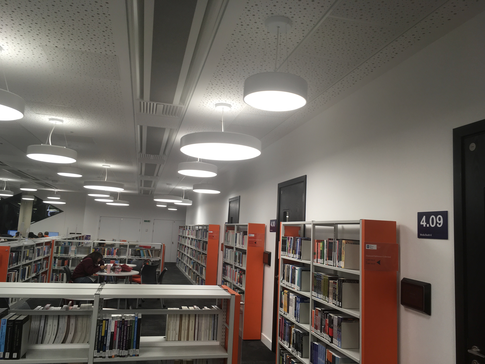

Student experience
Hi! my name is Micheal. I am a second year computer science student at the university of Sheffield and I must admit I had so much fun using the incredible facilities on the top floor of the Diamond. To begin the day, I went to the library and had a browse through the plethora of books available. Eventually, I decided to read a book about Javascript, which was incredibly fascinating. Then, I went over to one of the quiet areas to work on one of my assignments. The tranquillity of the environment allowed me to complete a lot of my work.
After a quick lunch break, I went back to the top floor for a group assignment meeting. There are several rooms on the top floor dedicated for group meetings,which can be booked 48 hours in advance, making things very convenient. After this, I decided to head back over to the quiet areas to do more work, but my laptop had a problem with it. It crashed! Luckily, there was CiCS support who helped me fix it. Finally, to cap off the day, I headed over to the media booths to try to create some of my favorite EDM music. It was great fun and a nice oppotunity to unwind.